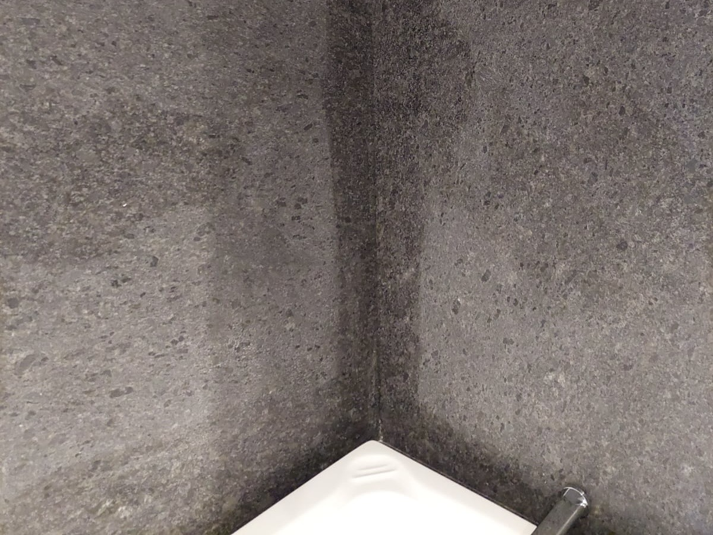
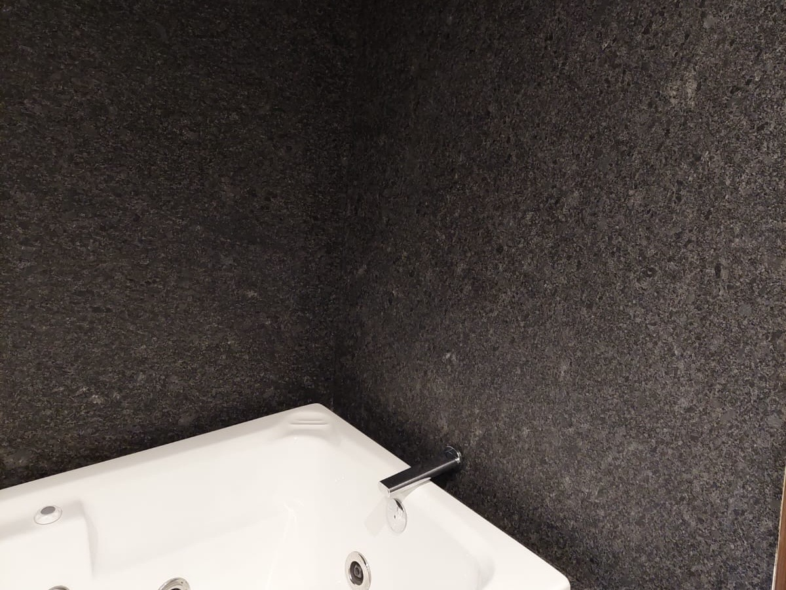

NUESTROS PRINCIPIOS DE VALOR
ATENCIÓN AL DETALLE
La perfección se encuentra en la ejecución meticulosa de cada paso del proceso.
CULTURA DE TRABAJO
Profesionalismo, discreción y el más alto estándar ético en cada proyecto.
SATISFACCIÓN DEL CLIENTE
Nuestra meta es superar las expectativas, logrando resultados inigualables.
Nuestros Servicios
Soluciones especializadas para la preservación y restauración de sus superficies de valor
LIMPIEZA FINA
Limpieza profunda y delicada de superficies
LIMPIEZA INDUSTRIAL
Eliminación de residuos y contaminantes
MÁRMOLES Y GRANITOS
Tratamiento especializado de piedra natural
DESBASTADO Y PULIDO
Restauración del brillo y acabado espejo
SELLADO DE SUPERFICIES
Protección duradera con nanotecnología
Es una inversión.

ANTES

DESPUÉS